Popol Vuh
3.9/5
Resumen
El texto sagrado de los quiché de Guatemala, transcrito en el siglo XVI a partir de tradición oral y pictórica mucho más antigua. Narra la creación del mundo por los dioses —tras varios intentos fallidos con hombres de barro y de madera— hasta llegar a los hombres de maíz, y las aventuras de los Héroes Gemelos, Hunahpú e Ixbalanqué, que descienden a Xibalbá, el inframundo, para vencer a sus señores.

Cantar de mio Cid
3.2/5
Resumen
El poema épico más antiguo conservado en castellano, copiado por Per Abbat en 1207. Sigue a Rodrigo Díaz de Vivar tras su destierro ordenado por Alfonso VI, sus campañas militares hasta la conquista de Valencia, y la restitución de su honor —y el de sus hijas— tras la afrenta de los Infantes de Carrión.

Cosas del Cid
4.3/5
Resumen
Poema de Rubén Darío, publicado en 1905 dentro de Cantos de vida y esperanza, que recrea un episodio legendario de la vida del Cid Campeador: el gesto de humildad cristiana con que el héroe, ya investido de gloria y poder, se detiene a socorrer a un leproso en el camino. Darío convierte la leyenda medieval castellana en meditación sobre la piedad como la verdadera nobleza, por encima de las armas y el triunfo militar.

Los motivos del lobo
4.4/5
Resumen
Publicado en 1913, el poema de Rubén Darío reelabora la leyenda medieval de San Francisco de Asís y el lobo de Gubbio: el santo apacigua a la fiera y logra que conviva en paz con el pueblo. Cuando regresa, el lobo ha vuelto al monte y le explica que la crueldad de los hombres hizo imposible aquella paz. Bajo el ropaje de fábula franciscana, Darío reflexiona sobre la violencia humana y los límites de la mansedumbre.
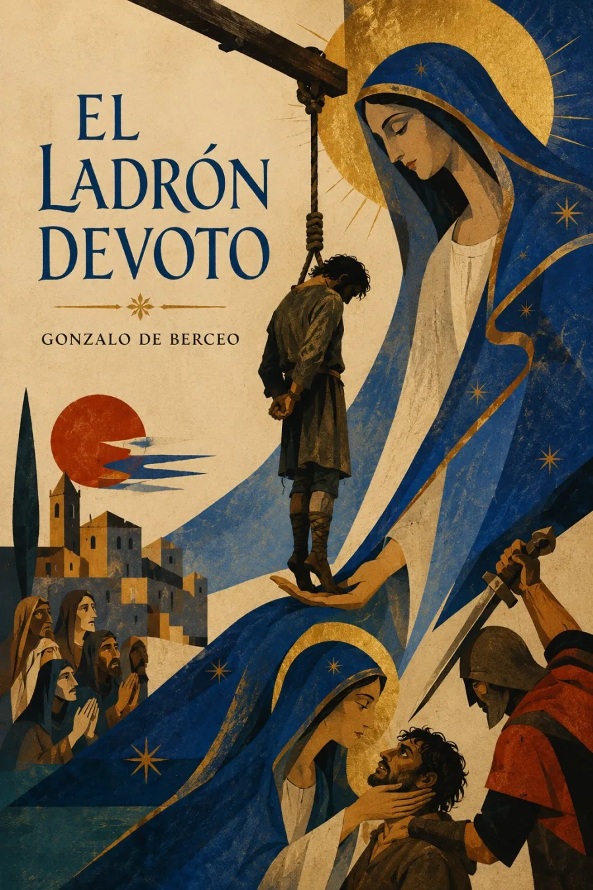
El Ladrón Devoto
4.8/5
Resumen
En el sexto de los Milagros de Nuestra Señora, Gonzalo de Berceo presenta a un ladrón que, pese a sus hurtos, mantiene su devoción a la Virgen. Condenado a la horca, permanece vivo durante tres días porque ella lo sostiene; cuando intentan rematarlo, su intervención vuelve a protegerlo. El relato explora la tensión medieval entre castigo, misericordia y devoción mariana.

Duelo de la Virgen
5.0/5
Resumen
En este poema devocional del siglo XIII, Gonzalo de Berceo presenta a san Bernardo solicitando a la Virgen que relate la Pasión. María toma entonces la palabra y reconstruye lo que vio y padeció, desde el prendimiento hasta la sepultura de Cristo. El marco dialogado y la tradición del planctus Mariae convierten el relato evangélico en memoria corporal, dolor materno y meditación devocional.
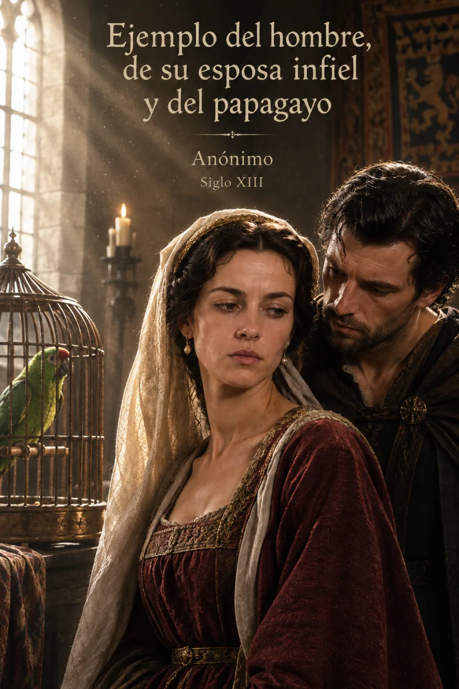
Ejemplo del hombre, de su esposa infiel y del papagayo
3.6/5
Resumen
Este relato pertenece al Sendebar, colección de cuentos orientales traducida del árabe al castellano en 1253 por encargo del infante Fadrique. Un hombre deja a un papagayo como testigo de la conducta de su esposa; cuando el ave denuncia sus encuentros, ella y su criada simulan una noche de tormenta para desacreditarlo. Insertado en el debate judicial que estructura la obra, el cuento no ofrece una lección neutral: es una pieza retórica con la que un consejero intenta demostrar al rey la supuesta astucia engañosa de las mujeres.
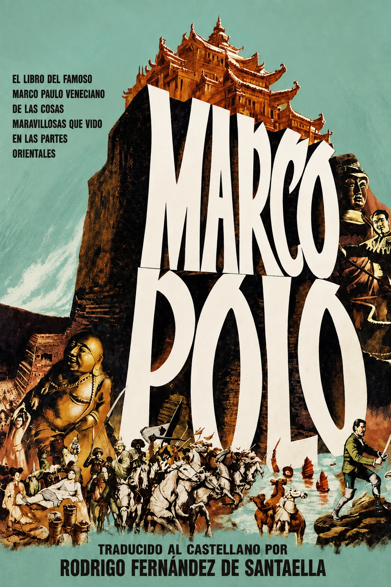
El libro de Marco Polo
4.4/5
Resumen
Esta primera versión castellana del relato de Marco Polo, traducida por Rodrigo Fernández de Santaella, se imprimió en Sevilla el 28 de mayo de 1503. Reúne descripciones de Armenia, Persia, Arabia, India y la Tartaria bajo el dominio del gran kan, combinando itinerarios, administración, comercio y noticias de tierras presentadas al lector europeo como maravillosas. La edición añadió una introducción cosmográfica de Santaella y convirtió un texto medieval de circulación manuscrita en un impreso ligado a la nueva geografía sevillana del siglo XVI.
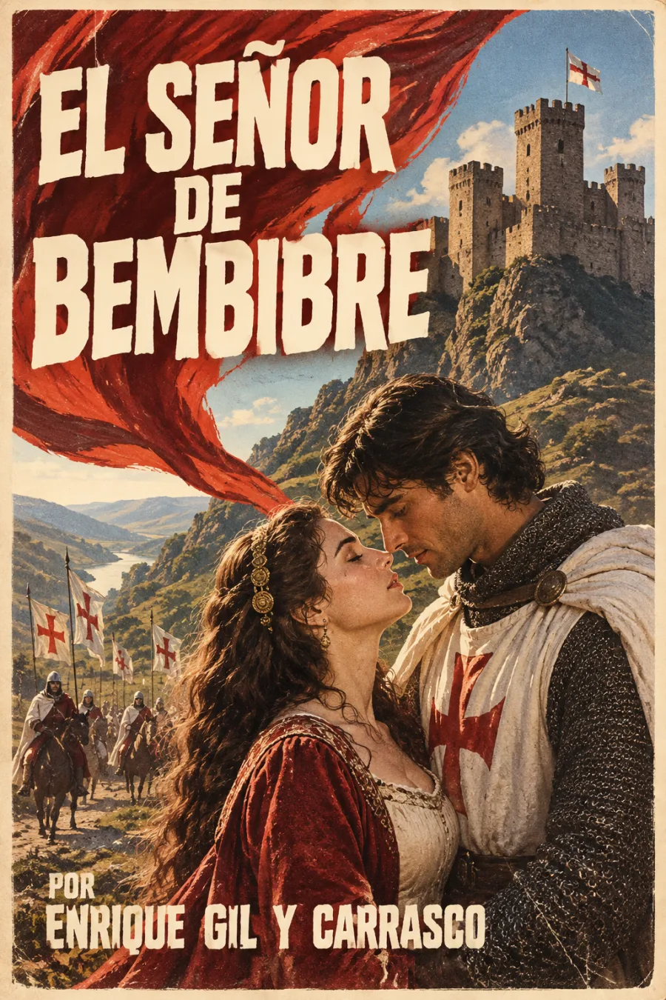
El señor de Bembibre
3.9/5
Resumen
Publicada en Madrid en 1844, esta novela histórica sitúa el amor de don Álvaro Yáñez y Beatriz Ossorio en el Bierzo de comienzos del siglo XIV, durante la persecución y disolución de la Orden del Temple. La decisión familiar de casar a Beatriz con el conde de Lemos enlaza su tragedia privada con la caída política de los templarios. Gil y Carrasco convierte castillos, montañas y monasterios bercianos en memoria histórica: el paisaje no sirve solo de fondo, sino que conserva las ruinas de un mundo condenado a desaparecer.

Libro de buen amor
4.0/5
Resumen
Compuesto en el siglo XIV y transmitido en versiones asociadas a 1330 y 1343, el Libro de buen amor reúne relato seudoautobiográfico, fábulas, sermón paródico, debate, plegaria y canción. Su voz narrativa ensaya sin resolver la tensión entre el “buen amor” y el deseo mundano, invitando al lector a interpretar un texto deliberadamente ambiguo. La mediadora Trotaconventos, mezcla de astucia, oficio urbano y comicidad, anticipa sobre todo la figura de Celestina.
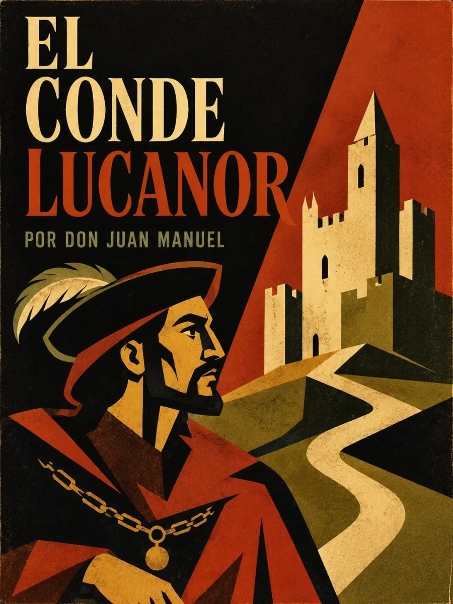
El Conde Lucanor
4.5/5
Resumen
Concluido en 1335, El Conde Lucanor organiza su enseñanza en cinco partes. La primera —la más célebre— reúne cincuenta y un exempla: el conde plantea un problema de gobierno, honra o conducta; Patronio responde con un relato; y don Juan Manuel condensa el consejo en versos finales. Las partes posteriores sustituyen progresivamente el cuento por sentencias y reflexión doctrinal. Al advertir sobre los errores introducidos por los copistas, el autor afirma además un control poco común sobre la transmisión y autoridad de su propia obra.

Cuentos de Decamerón
4.4/5
Resumen
Compuesto aproximadamente entre 1349 y 1351, el Decamerón enmarca cien novelas en la peste florentina de 1348. Siete mujeres y tres hombres abandonan la ciudad y organizan durante diez jornadas una comunidad regida por turnos, temas y narraciones. Frente al derrumbe de los vínculos civiles descrito al inicio, contar historias se vuelve una forma de recomponer el orden: los relatos examinan fortuna, deseo, inteligencia, comercio, violencia y autoridad religiosa sin reducirlos a una única moraleja.
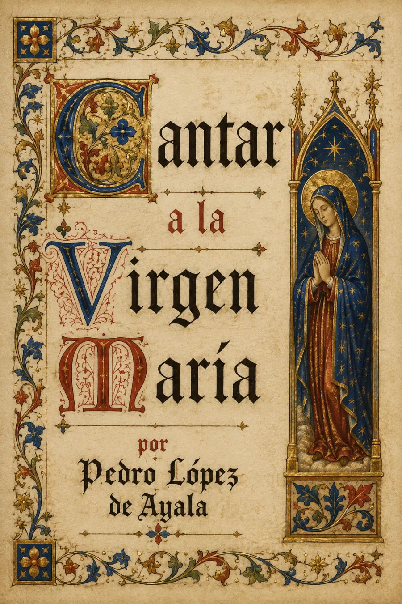
Cantar a la Virgen María
4.0/5
Resumen
Cantar devocional de Pedro López de Ayala, canciller mayor de Castilla y una de las figuras letradas más influyentes del siglo XIV, incluido dentro de su extenso Rimado de Palacio. En estrofas de arte mayor dirigidas a la Virgen, el canciller alterna la súplica personal por su alma con la reflexión moral sobre la corrupción de la corte que también domina el resto de la obra. Ejemplo de la poesía religiosa cortesana que floreció en la Castilla de Pedro I y Enrique II.
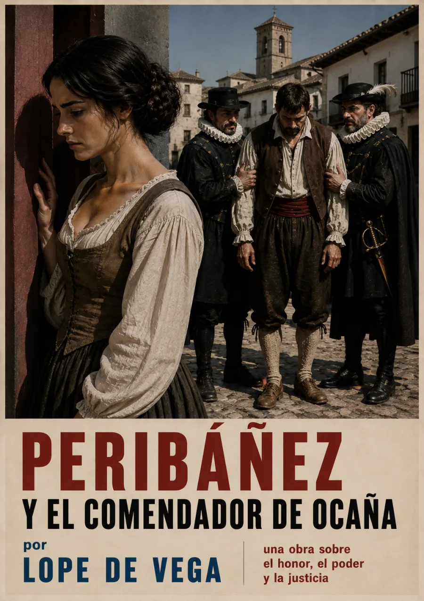
Peribáñez y el comendador de Ocaña
4.3/5
Resumen
Ambientada en el reinado de Enrique III de Castilla, la obra narra cómo el Comendador de Ocaña se enamora de Casilda, esposa del labrador Peribáñez, y trama seducirla abusando de su poder señorial. Peribáñez, hombre de honor campesino antes que de sangre noble, defiende su matrimonio y su honra hasta las últimas consecuencias. Lope de Vega enfrenta aquí el código del honor aristocrático con la dignidad moral del hombre común.
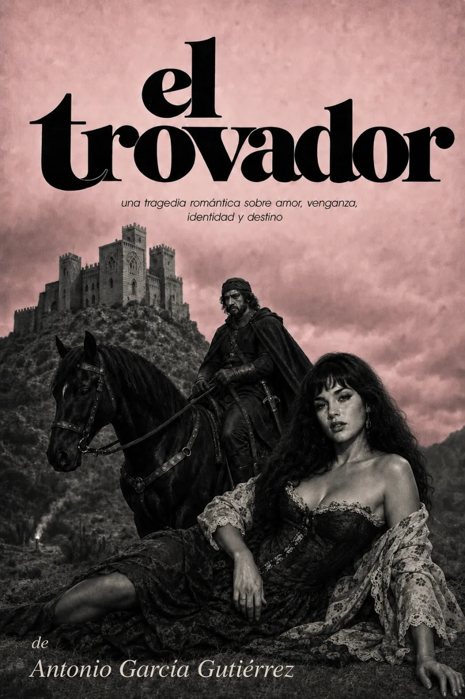
El trovador
4.1/5
Resumen
Antonio García Gutiérrez ambienta este drama romántico en la Aragón del siglo XV, durante las guerras civiles entre los partidarios del Conde de Urgel y la casa de Trastámara. Manrico, el trovador del título, y el Conde de Luna se disputan el amor de Leonor sin saber que están unidos por un secreto de sangre que una gitana, Azucena, guarda desde la infancia de ambos. La obra que en 1836 marcó el triunfo del Romanticismo en los escenarios españoles, y que después inspiraría el Il Trovatore de Verdi.

Nezahualcóyotl
3.9/5
Resumen
Selección de la poesía náhuatl de Nezahualcóyotl, el rey-poeta de Texcoco (1402–1472), en la que él mismo repasa su vida convulsa: la infancia marcada por el asesinato de su padre, el exilio, su ascenso como gobernante dentro de la Triple Alianza, sus obras de ingeniería, y las meditaciones sobre el tiempo, la muerte y lo divino por las que es recordado como una de las voces más profundas de la literatura prehispánica.
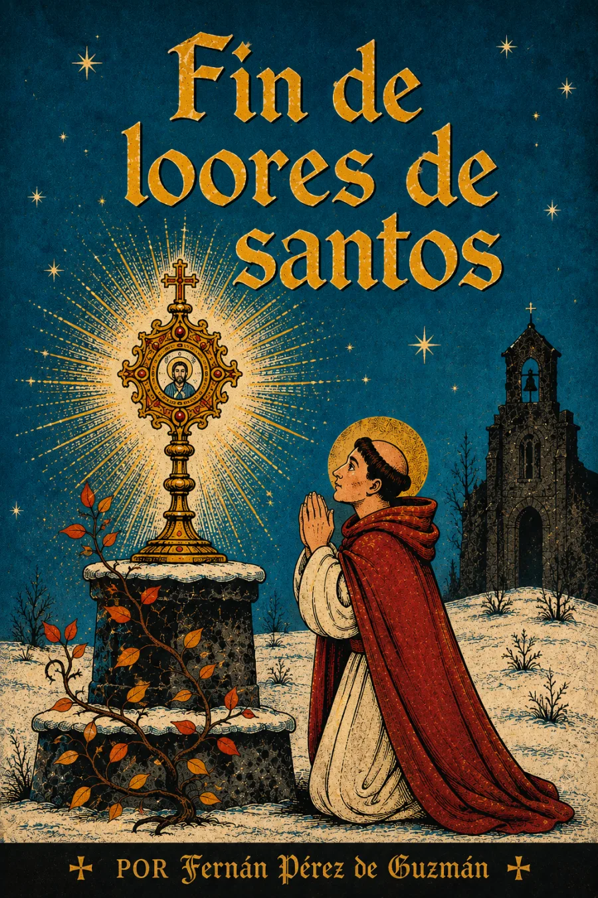
Fin de loores de santos
3.3/5
Resumen
Poema devocional de Fernán Pérez de Guzmán, cronista e historiador castellano del siglo XV, que cierra su serie de "loores" dedicados a los santos con una reflexión final sobre la santidad como modelo de vida cristiana. Representativo del gusto de la nobleza letrada del Cuatrocientos por la poesía moral y religiosa recogida en cancioneros.
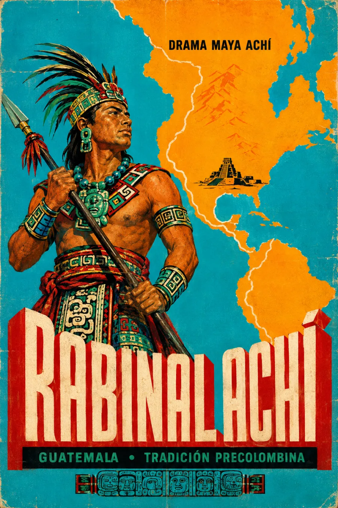
Rabinal Achí
4.5/5
Resumen
Drama dancístico de la tradición maya achí, transmitido oralmente durante generaciones antes de ser transcrito en el siglo XIX por el abate Charles Étienne Brasseur de Bourbourg a partir de la memoria del anciano Bartolo Sis. Narra el juicio y ejecución ritual de Cawek, guerrero k'iche' capturado por los guerreros de Rabinal tras años de guerra entre ambos señoríos. Única obra teatral prehispánica de las Américas que ha sobrevivido casi íntegra, hoy reconocida por la UNESCO como Patrimonio Oral e Intangible de la Humanidad.
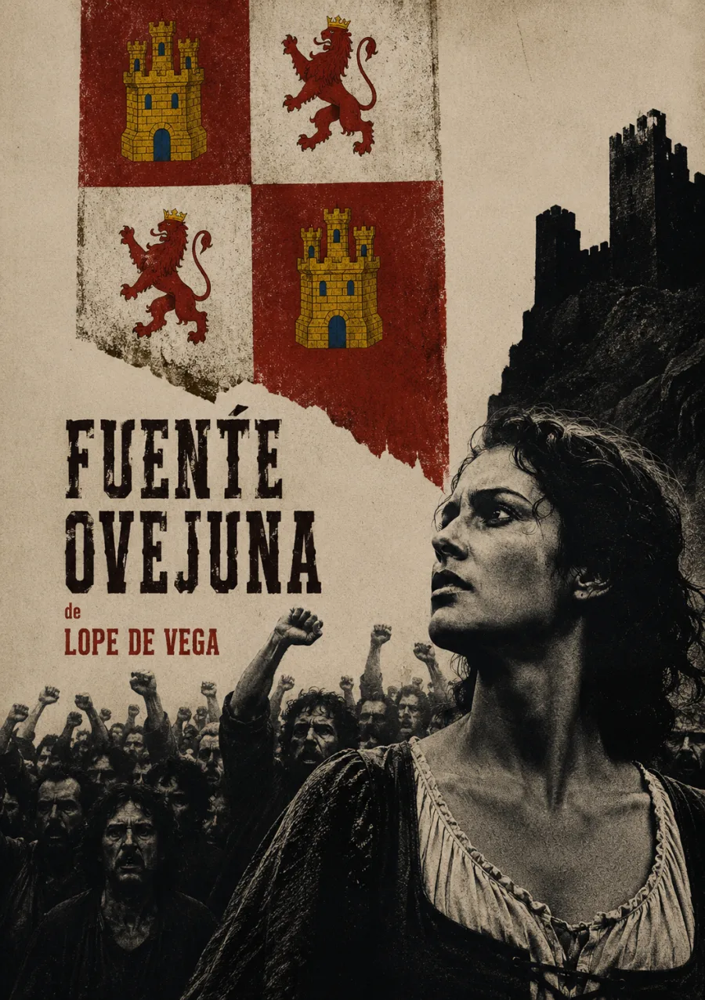
Fuente Ovejuna
4.7/5
Resumen
Lope de Vega dramatiza el levantamiento real de 1476 en el pueblo cordobés de Fuente Ovejuna contra su comendador, Fernán Gómez de Guzmán, cuyos abusos de poder y violencia contra las mujeres del pueblo desatan una rebelión colectiva. Cuando los Reyes Católicos investigan el asesinato del comendador, el pueblo entero responde al tormento con una sola voz: "Fuente Ovejuna lo hizo." Una de las obras cumbre del teatro español del Siglo de Oro sobre la justicia popular frente a la tiranía señorial.
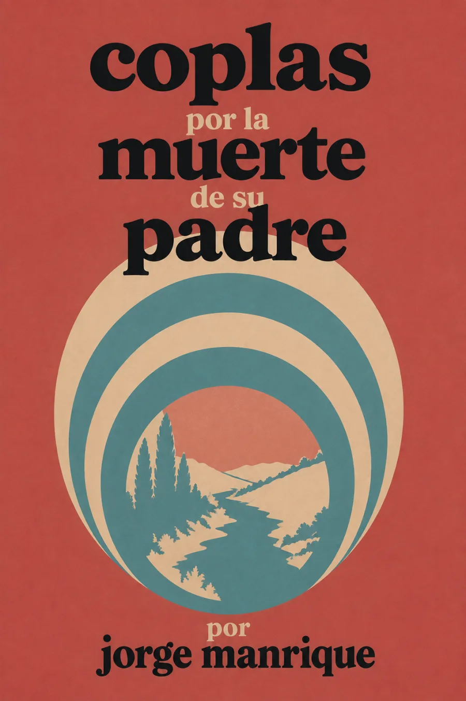
Coplas por la muerte de su padre
4.5/5
Resumen
Elegía de Jorge Manrique escrita hacia 1477 tras la muerte de su padre, don Rodrigo Manrique, maestre de la Orden de Santiago. Con la estrofa de pie quebrado que la hizo célebre, medita sobre la fugacidad de la vida, la fortuna y la belleza terrenal frente a la muerte igualadora, y encuentra consuelo en la fama que sobrevive a los virtuosos. Una de las cumbres de la poesía castellana medieval.